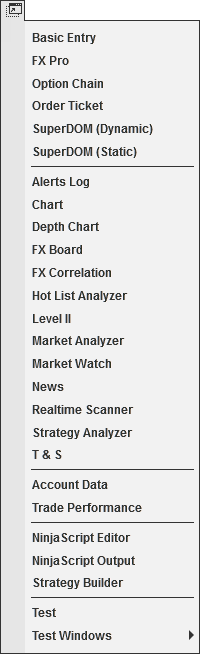

|
<< Click to Display Table of Contents >> New Menu |


|
New Menu
|
<< Click to Display Table of Contents >> New Menu |
|
The following menus and items are available via the New menu of the NinjaTrader Control Center.

Creates new Basic Entry window |
|
Creates a new FX Pro window |
|
Created a new Option Chain window |
|
Creates a new Order Ticket window |
|
SuperDOM (Dynamic) |
Creates a new SuperDOM (Dynamic) window |
SuperDOM (Static) |
Creates a new SuperDOM (Static) window |
Creates a new Alerts Log window |
|
Creates a new Chart window |
|
Creates a new FX Board window |
|
Creates a new Hot List Analyzer window |
|
Creates a new Level II window |
|
Creates a new Market Analyzer window |
|
Created a new Market Watch window |
|
Creates a new News window |
|
Creates a new Strategy Analyzer window |
|
Creates a new Time & Sales window |
|
Account Data |
Creates a new Account Data window |
Creates a new Trade Performance window |
|
Creates a new NinjaScript Editor window |
|
Opens the NinjaScript output window (this includes the NinjaScript Utilization Monitor subwindow) |
|
Creates a new Strategy Builder window |
|
This is an example for a custom NinjaScript AddOn installed |